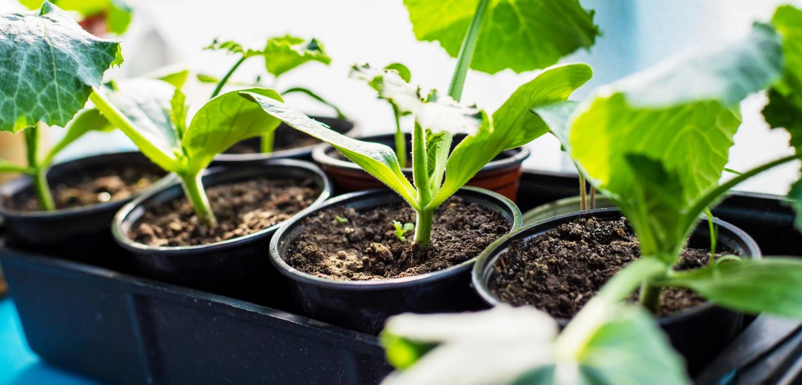

Growing a Greener Future
Growing media
Growing media, which includes coco peat blocks and coco husk chips, for growers, nurseries and potting mix makers.
- AddressPollachi, Tamil Nadu, India
- Phone and WhatsApp+91 80724 38128
- Emailinfo@origencoco.com
Growing a Greener Future
Growing media, which includes coco peat blocks and coco husk chips, for growers, nurseries and potting mix makers.
Who we are
Origen Coco supplies a comprehensive range of coconut-based products to growers, importers, distributors and industrial buyers. Backed by approximately 10 years of experience supplying the Indian market, we combine farmer-direct sourcing, careful product preparation and a customer-focused approach to serving domestic and international markets.
We understand that successful supply partnerships depend on more than the product itself. Consistent specifications, competitive commercial terms, clear communication and dependable shipment planning are central to the way we aim to do business.

01 · Growing media
Washed, dried, and compressed coir pith that expands into a light, moisture-holding growing medium.
Coco peat is the fine, spongy pith left when coconut husk is separated into fibre. It is a natural, renewable alternative to peat moss that holds plenty of water without turning heavy or waterlogged.
Growing medium for vegetables, flowers and soft fruit in greenhouse and open fields · Seed starting and rooting of cuttings · Base in nursery and potting mixes · Soil conditioner for garden beds and containers
| Item | Details |
|---|---|
| Block types | 5 kg blocks; 650 g briquettes |
| Grades | Washed, buffered or unwashed |
| Packing | Palletised, shrink-wrapped or loose |
| Custom options | Peat/chip blends; 6 or 8 mm sieve |
| Parameter | Value |
|---|---|
| Electrical conductivity (EC) | Washed: below 0.5 mS/cm; unwashed: high |
| pH | 5.5 to 6.5 |
| Moisture content | Less than 18% |
| Compressed dimensions | 30 × 30 × 12 cm; 20 × 10 × 5 cm |
| Expansion volume | Up to 75 L (5 kg); 9 to 10.5 L (650 g) |
| Sand/fibre/impurities | To be confirmed |

02 · Growing media
Diced husk pieces that keep roots well aerated and drain freely.
Coco husk chips are small pieces of coconut husk. They differ from coco peat, as they create a different planting medium that has more air pockets and drains excess water more effectively. This makes them a suitable choice for those plants that do best if their roots have air circulating around them.
Orchid cultivation · Blending with coco peat to improve aeration · Potting mixes for large containers and nurseries · Mulch for garden beds
| Item | Details |
|---|---|
| Chip sizes | 0 to 12 mm; 0 to 24 mm |
| Forms | 5 kg blocks; peat blends |
| Packing | Palletised or shrink-wrapped |
| Parameter | Value |
|---|---|
| EC | Washed: below 0.5 mS/cm; unwashed: high |
| pH | 5.5 to 6.5 |
| Moisture content | Less than 18% |

Growing media
Coco peat, or coco peat and husk chip blends, in UV-stabilised bags that are ready to plant.
Grow bags are compressed slabs of coco peat, or blends of coco peat and husk chips, sealed in UV-stabilised poly bags. Add water, cut planting holes and plant: the slab expands to fill the bag and keeps water and air around the roots.
| Item | Details |
|---|---|
| Sizes | 100 × 15/18/20 × 8/10/12 cm; custom sizes |
| Mixes (peat / chips) | 100/0, 80/20, 70/30, 60/40, 50/50, 0/100 |
| Chip size (100% chip bags) | 0 to 12 mm or 0 to 24 mm |
| Bag | UV-stabilised bags or naked slabs |
| EC | Below 0.5 mS/cm (washed) |
| pH | 5.5 to 6.5 |
Illustrative image. Product photographs to be confirmed.
Growing media
Small pressed discs of coco peat that expand into a ready potting medium.
Coco peat discs are compressed rounds of selected coco peat. Soak a disc in water and it expands into an airy, free-draining medium for a small pot. They are easy to stock and handle, for nurseries, flower growers and home gardens.
| Parameter | Value |
|---|---|
| Size | 10 × 2.5 cm |
| Weight | 65 to 135 g |
| EC | Washed: below 0.5 mS/cm; unwashed: high |
| pH | 5.5 to 6.5 |
| Expansion | 1 L and 1.5 L after soaking |
| Particle size | 1 to 6 mm |
| Packing | Individually shrink-wrapped with labels, or in woven bags / cartons |
Illustrative image. Product photographs to be confirmed.
Whether you are sourcing coconut-based growing media, raw materials or bulk coconut products, our team is ready to discuss your specifications, volumes, packaging and destination requirements. Contact us for product information and a tailored quotation.
Share your specifications, volume and destination for a tailored supply proposal.
© 2026 Origen Coco
